Fundamental Physics
in the voice of Richard FeynmanA first-principles tour of all physics — from Newton's apple to the edges of the observable universe — narrated in Richard Feynman's voice for an Indian BSc student. Fourteen chapters cover the mathematical toolkit, classical mechanics (with a draggable projectile and an orbitable 3D pendulum), waves and oscillations, fluid dynamics, thermodynamics (with a live PV-diagram engine), electromagnetism (with interactive field-line visualizations and a 3D EM-wave), optics (ray-tracing and interference-pattern demos), special relativity (with a Lorentz-boost spacetime diagram), quantum mechanics (double-slit simulation and wavefunction collapse), atomic/nuclear/particle physics (interactive Standard Model explorer), general relativity (with a 3D spacetime-curvature demo), cosmology (expanding-universe animation), and the unsolved frontiers. Every chapter is interactive: drag vectors, tune sliders, watch animations, and build intuition before touching an equation.
Tenali Raman Stories
Five of the best-loved Tenali Raman folk tales, retold for young readers in a warm, witty Indian-English storyteller's voice: meet the real 16th-century jester poet of Krishnadevaraya's court, then enjoy how a fearless boy won his clever tongue from Goddess Kali, how Tenali tricked two thieves into watering his garden, how one cat outsmarted a royal milk order, how a proud vow melted before a bowl of brinjal curry, and how three identical dolls and a single thread taught the value of listening. Each tale ends with its own gold-stamped moral, and a closing Moral Chest keeps every lesson in one place.
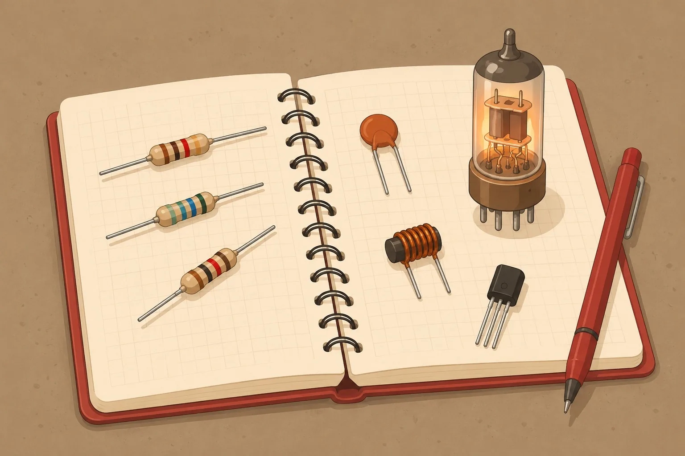
Basic Electronics
in the voice of The Clear MentorA concise, example-first tour from Ohm's law through resistors, capacitors, and inductors, into diodes, the triode, and the transistor, ending with how a radio ties every part together — with live 2D circuit animations on nearly every page.

The BEAM Under the Hood
A runtime-level tour of the Erlang virtual machine for Elixir/Phoenix developers, told in the plain, funny, first-things-first voice of Joe Armstrong. Millions of isolated processes, reduction-counted preemptive scheduling, private per-process heaps with generational GC, share-nothing message passing, the off-heap binary trap, dirty schedulers, and node-to-node distribution — each design choice explained by the failure it exists to survive and the price it charges, then connected back to real symptoms: scheduler collapse, large-binary leaks, and mailbox bloat.
Sandboxing & Process Isolation
A warden's tour of a maximum-security facility where the inmates are processes: namespaces are the walls, cgroups the rations, capabilities the confiscated keys, and seccomp the visiting rules. Climbs the isolation stack primitive by primitive, tells the real historical container escapes (Dirty COW, runc CVE-2019-5736, Leaky Vessels, the NVIDIA toolkit TOCTOU) as instructive capers, then reaches the stronger cells — Firecracker/gVisor microVMs and WebAssembly's capability-based sandbox — closing with a decision guide for layering them by threat model. Every metaphor maps onto the real mechanism, and the actual syscall, flag, or CVE is always named.
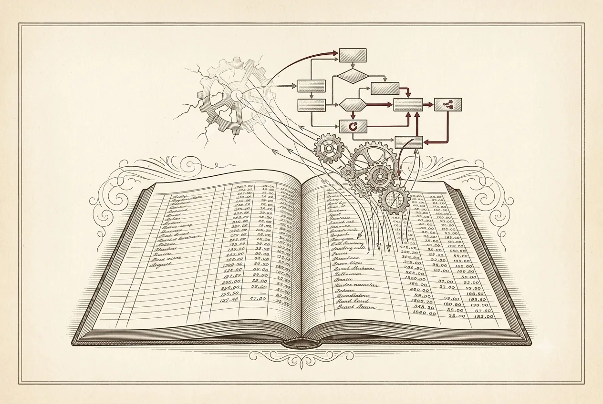
Durable Execution: Workflows That Survive Anything
A first-principles tour of durable execution for backend engineers, told in the calm, failure-first, back-of-the-envelope voice of Jim Gray. It starts where all reliability starts — machines crash, networks partition, disks lie — and builds up from the append-only log (WAL and ARIES) to the mechanisms that let a program survive its own death: checkpointing, event sourcing and deterministic replay; idempotency and the exactly-once illusion over at-least-once delivery; durable timers; and sagas with compensation for the failures replay can't hide. Every mechanism is introduced by the specific failure it exists to survive and the guarantee it does — and does not — make, then grounded in how Temporal, Oban, and Ash Reactor actually implement it.
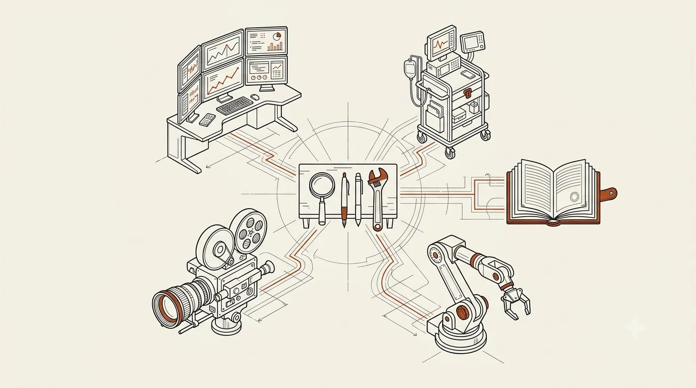
Pi.dev: Your Own Agent Harness
A domain-opportunist's field notes on Pi, the open-source agent harness you reshape around your own workflow — four tools, an agent loop, TypeScript extensions and BYOK — and the wildly different products it makes buildable across finance, healthcare, law, industry, and the studio, plus where the liability lives.
BookBank: Turn a Topic Into a Beautiful Book
in the voice of The Clear MentorA hands-on guide to making books with BookBank — the mental model, the anatomy of a book folder, choosing a persona voice and a theme look, writing a prompt that yields a great book, opening a book-request issue, and the full request-to-shelf lifecycle. In the Clear Mentor's voice, light and minimal with a Head First spirit.
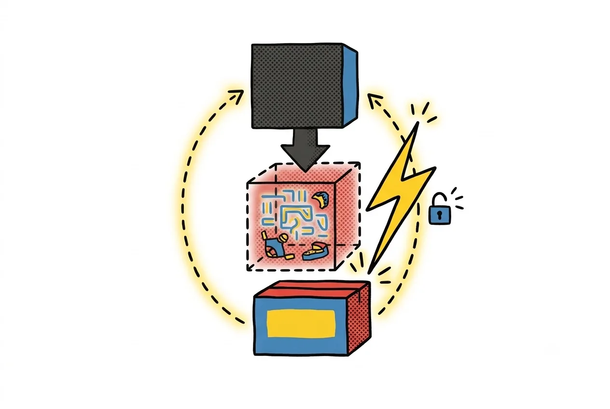
Svelte
in the voice of The Clear MentorA concise, example-first tour of Svelte 5's rune-based reactivity — $state, $derived, $effect, $props/$bindable, snippets, control flow, bindings, transitions, and how to share state — in a bold yellow/blue/red/gray zine-styled light theme.
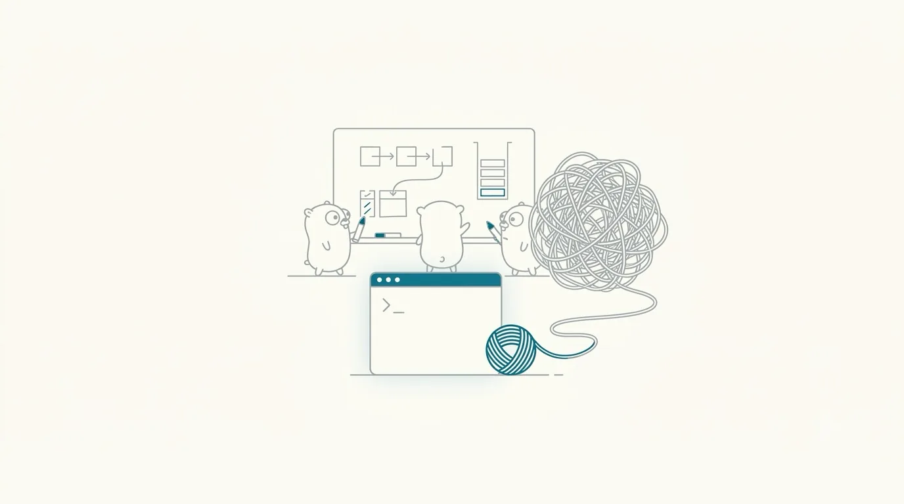
Let's Go - A Primer
A first-principles tour of Go for people who have never written a line of it: zero values, slices vs. arrays, structural interfaces, errors as values, defer, goroutines and channels, embedding, and the toolchain that ties it together. Verified against Go 1.26.
Integrating LinkLog: The Python SDK Field Guide
in the voice of The Clear MentorA hands-on guide for developers wiring LinkLog into their Python services — capture failures, keep the success path invisible, and hand the sidecar a forensic checkpoint.
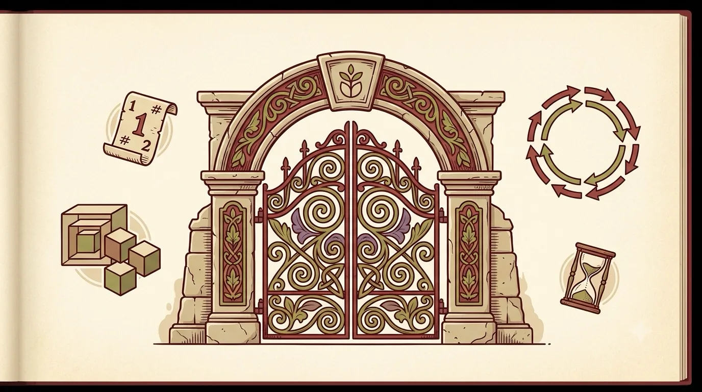
Interesting Linux
Eleven lesser-known Linux kernel powers, explained from first principles with verified syscalls and real-world use cases: fd-ification (eventfd/timerfd/signalfd/pidfd), safer file opening (O_PATH/O_TMPFILE/O_NOFOLLOW), zero-copy data movement (splice/vmsplice/sendfile/tee), memfd_create and file sealing, epoll's edge-triggered sharp edges, io_uring, PID/mount namespaces, kernel tuning knobs (swappiness, THP, PSI), userfaultfd and post-copy migration, copy_file_range and reflinks, and Landlock unprivileged self-sandboxing.
LLMs, Go Code!
in the voice of The CrafterA first-principles tour of Go through the lens of directing and auditing an AI coding agent — structs, implicit interfaces, errors as values, concurrency, and the toolchain, then how to write executable specs and test-drive an agent, closing with two worked case studies.
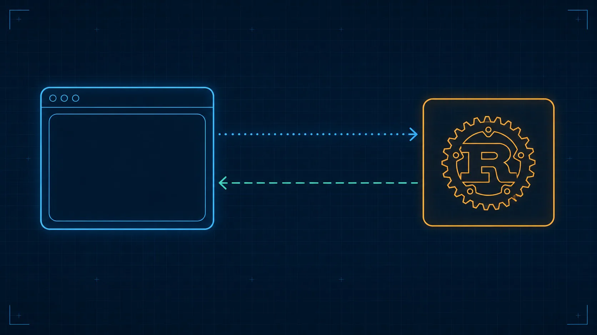
Tauri - cross platform apps
in the voice of The Clear MentorA conceptual map of Tauri v2 — architecture, commands and events, capabilities and security, plugins and sidecars — written to help you direct a coding agent, not memorize an API surface.
Redis Internals: Programming Ideas Behind the Code
in the voice of The Clear MentorA chalkboard-styled, source-code-oriented tour of Redis's internals -- the single-threaded event loop, object encodings, incremental rehashing, fork-and-forget persistence, replication and clustering, and approximate expiration/eviction -- written to show programmers how clever, disciplined engineering makes Redis fast and predictable, and to inspire them to build their own useful systems.
Investment Adventure
in the voice of The Clear MentorA friendly, mentor-voiced field guide that takes a complete beginner from a $1,000 seed and the psychology of money all the way to a real first portfolio and the patience to stay invested through a crash.
Git Internals
in the voice of The Clear MentorA retro-terminal deep dive into what .git actually does under the hood — objects, hashes, branches, merges, the reflog safety net, and how it all stays trustworthy at scale — built for teens and junior devs who never want to fear a merge conflict again.
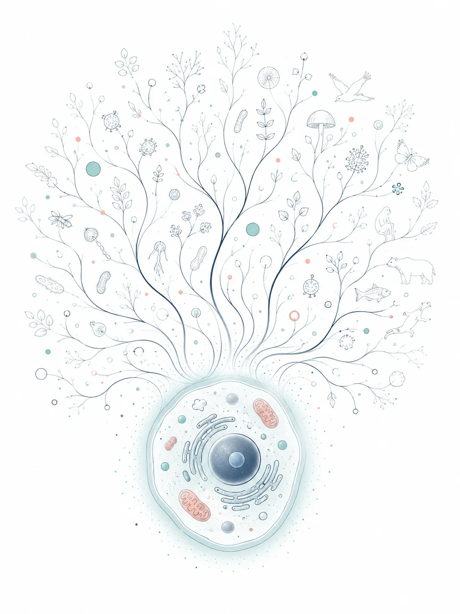
First Principles Biology for NEET
in the voice of The Clear MentorA concept-first tour of NCERT Class 11 & 12 Biology for NEET UG, in 28 chapters spanning cell biology, genetics, evolution, plant and human physiology, reproduction, biotechnology, and ecology, each mapped back to its NCERT chapter with NEET exam-trap callouts.
The Memory Wall
A first-principles, chalkboard-styled tour of why 2026 computing is bottlenecked by data movement, not arithmetic: chiplet CPUs and 3D stacking, the HBM/DDR5/HBF memory hierarchy, why LLM decode is memory-bound, why interconnects (PCIe/NVLink/UCIe) are the new bus, the four fixes architects are pursuing, and what it means for how software engineers should write and profile code.
From Disk to CPU: How Linux Runs Your Programs
in the voice of Richard FeynmanA first-principles, analogy-rich tour of ELF files and program execution on Linux — following one tiny C program from source through execve, the kernel's segment loader, the dynamic linker, and into main(), with hands-on readelf/strace callouts throughout.
HTTP Caching Headers
in the voice of The Clear MentorA short, example-first guide to Cache-Control freshness, ETag/conditional-GET revalidation, and choosing a caching strategy per endpoint.
The Invisible Machine
in the voice of Richard FeynmanThe Invisible Machine — a Feynman-voiced companion to NCERT Class 12 Physics Part I. Six of the syllabus's most beautiful ideas (the electric field, drift velocity, the cyclotron, Faraday–Lenz induction, AC resonance, and electromagnetic waves) presented as live, interactive case studies rather than a full re-teaching. An addendum for exploring, not replacing, the textbook.
SpaceTime
in the voice of Richard FeynmanA first-principles tour of gravity as the shape of spacetime — from the falling elevator and the equivalence principle to curved geodesics, time dilation you can watch tick, orbits as endless falling, black holes and their horizons, the plunge across one, and the ripples, wonders, and open mysteries it all opens. Feynman's voice, the Observatory night-sky skin, with live 2D physics widgets (a moving light clock, light-bending, Newton's cannonball, an escape-velocity/horizon simulator, a gravity-well clock) and interactive three.js scenes (a curved spacetime well, an orbitable black hole). Every number web-checked.
NEET
in the voice of Isaac NewtonA first-principles field guide to one real NEET paper (code G1 'KANHA'): the exam's structure and marking, then 25 actual questions across Physics, Chemistry and Biology worked to the reasoning behind each answer — with interactive 2D figures (Atwood machine, thrown ball, double-slit fringes, resistor decoder) and a rotatable 3D bcc crystal.
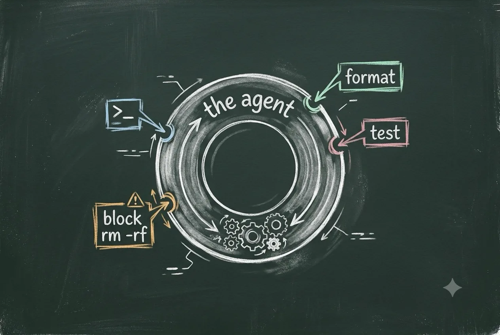
Claude Hooks
in the voice of The CrafterA first-principles field guide to Claude Code hooks, in the Crafter's voice — the lifecycle, the settings.json wiring, the stdin/stdout contract, matchers, and a whole chapter of Elixir/Mix recipes (format-on-save, a compile guard, and a Stop test-gate). Grounded in the official reference at code.claude.com/docs/en/hooks.
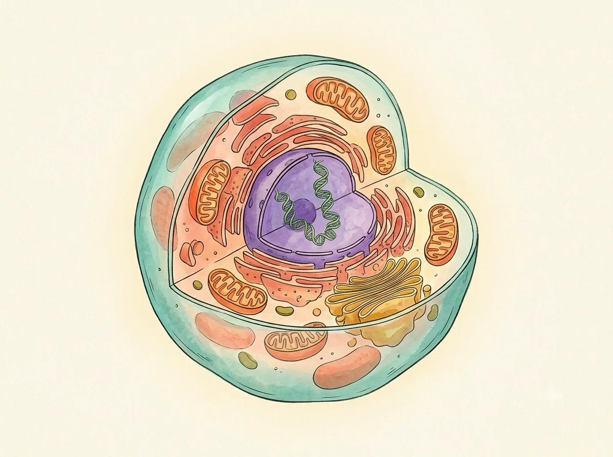
Human Cell
in the voice of Richard FeynmanA first-principles, city-metaphor tour of the human cell in a Feynman-as-biologist voice, written to excite teens and adults: the membrane, nucleus/DNA, mitochondria, the protein factory, cytoskeleton, recyclers, the cell cycle, and cancer/stem cells. Includes a live 2D membrane animation, a walking-kinesin animation, an interactive 3D mitochondrion, and hand-drawn SVG diagrams of each organelle.
Guitar!
in the voice of The GuitaristA modern, interactive first book for the acoustic guitarist — the twelve notes, the fretboard map, intervals, how chords are built, your first open chords, rhythm, scales, and keys. Every diagram, chord, and fretboard is playable in the browser via a built-in Web Audio pluck synth. Told in the voice of Mateo Cruz: slow is smooth, smooth becomes fast.
Fun with Calculus.
in the voice of Isaac NewtonA first-principles introduction to calculus in the voice of Isaac Newton — the derivative discovered from a falling stone before it is ever named, the rules of change, the integral as accumulated area (with an orbitable 3D solid of revolution), the Fundamental Theorem that binds them, a toolkit of e^x/ln/sin/cos, Taylor series, and where calculus runs the world in 2026 (gradient descent & back-propagation, the SIR epidemic model, Black-Scholes). Every chapter is interactive: drag the secant into a tangent, fill an area with Riemann rectangles, sweep the accumulation function, grow a Taylor polynomial, and roll a ball down a loss surface. (The book's six seed 'concepts' were the user's freeform brief — 'explain the derivative from motion along a line', 'add topics you deem important', 'include 2D/3D animations and current use-cases' — realized as the eight chapters below.)
Elixir OTP
in the voice of The CrafterA build-it-up field guide to Elixir OTP in the voice of The Crafter: isolated processes and the actor model, let-it-crash with links and monitors, GenServer, static and dynamic supervisors, Registry naming, Task/Agent, and the Application boot tree. Includes a 2D actor/mailbox animation and an interactive 3D supervision tree that crashes and heals in real time.
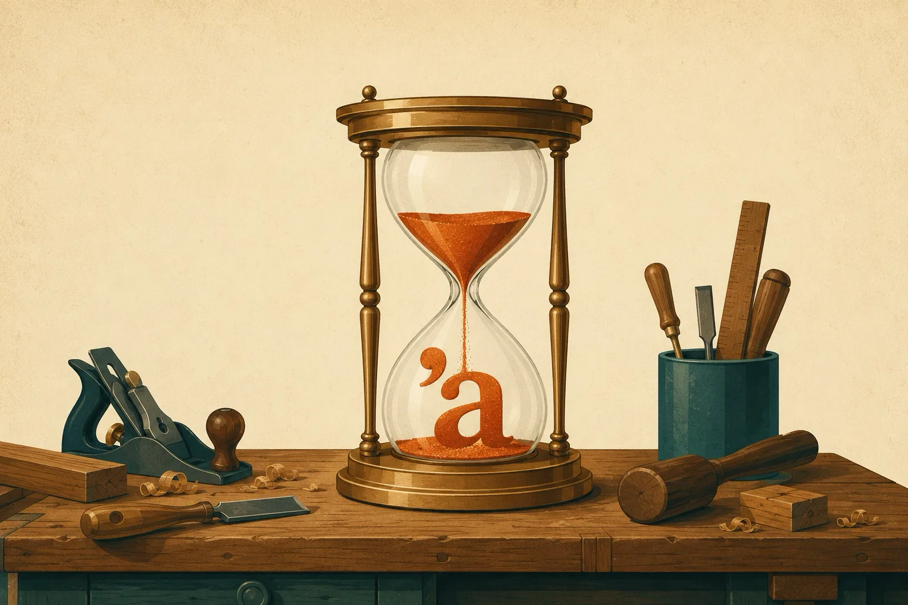
Rust lifetime
in the voice of The CrafterA craftsman's guide to Rust lifetimes — from stack, heap, ownership, and borrowing up through elision, 'static, and the modern NLL/Polonius borrow checker — told in the Crafting Interpreters voice.
Attention is all you need
in the voice of The CrafterA layered, first-principles reading of the 2017 Transformer paper (Vaswani et al., arXiv:1706.03762), in the Crafting Interpreters voice: from the sequential bottleneck and word embeddings, through query/key/value attention, scaled dot-product, multi-head, and positional encoding, up to the full encoder-decoder architecture, why self-attention wins, the training recipe and BLEU results, and how this one paper became modern LLMs (GPT, BERT) — closing with a full acronym-and-term glossary.
Apple ShortCuts app
A field guide to Apple Shortcuts: actions and pipelines, logic without code, every launch surface, self-running automations, the OS 26 Apple Intelligence layer, and the use cases where it genuinely earns its keep.
Unix File IO
in the voice of Richard FeynmanEverything is a file: how open, read, write, close, lseek, dup2, and pipes turn one tiny idea into files, terminals, and shell pipelines alike.

How GPUs work
in the voice of The Clear MentorA student-friendly, zine-flavored tour of the GPU — from 'why thousands of weak cores beat a few strong ones' through warps, CUDA kernels, the memory mountain, the graphics pipeline, and Tensor Cores, to why LLM chatbots are memory-bandwidth-bound, how 100,000-GPU AI factories work, and how to get free GPU time today. Includes funny cartoon image slots for every chapter.
Elixir Ash Framework - Basics
in the voice of The Clear MentorA gentle, high-level tour of Elixir's Ash Framework — model your domain, derive the rest. Resources, actions, domains, code interfaces, relationships, data layers, policies, and the extension ecosystem, grounded in the official Ash v3.29 docs. The user's four seed requests (make the high-level concepts very clear, add illustrations, and the what-is-ash / llms.txt source links) were interpreted as the book's brief and folded into these eight concept pages plus illustration slots.
Rust: Fearless System programming
in the voice of Richard FeynmanA witty, concept-first tour of Rust for the agentic-coding era — ownership, illegal-states-unrepresentable, errors as values, fearless concurrency, zero-cost abstractions, Cargo, how to build Rust with a coding agent, and when Rust is (and isn't) the right call.
ManifoldCAD
in the voice of The CrafterA hands-on, incremental tour of ManifoldCAD in The Crafter's voice — code-driven CAD that builds guaranteed-watertight solids. We work up from primitives and boolean modelling through transforms and 2D-to-3D extrude/revolve, map the full JavaScript API, then reach organic warp/refine/smooth, GLTFNode scenes with materials and animation, and real use cases from parametric printable parts to an embeddable geometry kernel. Every call is grounded in the official user guide and checked against the editor's shipped examples; each chapter ends with Challenges.
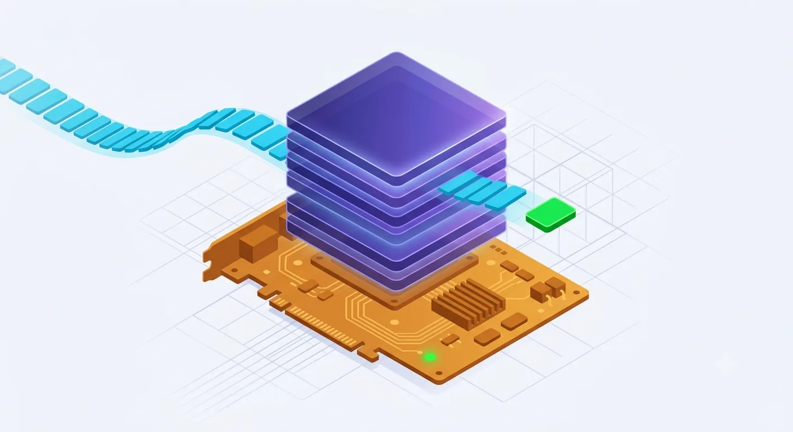
Custom LLM Models
in the voice of The Clear MentorA hands-on path from 'an LLM is a black box' to fine-tuning your own Llama or Qwen and serving it behind a real API — the forward pass, prefill vs decode, the KV cache (with the memory formula worked by hand), quantization, LoRA/QLoRA, a full worked fine-tune, and production serving with vLLM.
Spark DSL
in the voice of Richard FeynmanA first-principles, usage-focused tour of Elixir's Spark — entities, sections, extensions, schemas, the compile-time pipeline, and introspection — building to why introspectable DSLs are a natural fit for LLM-agentic systems (Ash AI, Jido) and a from-scratch agent DSL an LLM can read and call.
Meki Memory Agent in Elixir
A faithful tour of MeKi (Memory-based Expert Knowledge Injection, arXiv 2602.03359) — scaling an LLM's capacity with cheap ROM storage instead of FLOPs — then a runnable re-implementation in Elixir's Nx & Axon: token-level memory experts, the low-rank additive-sigmoid gate, the re-parameterization trick that folds training into a zero-cost lookup table, and serving it with Nx.Serving. Architecture and code are real; benchmark numbers are quoted from the paper, not reproduced.
Lua programming language
in the voice of The Clear MentorA practical tour of Lua 5.5 — tables, metatables, coroutines — and how to embed it safely inside Elixir with the lua library and script your Ash domain with ash_lua, ending in real multi-tenant use cases.
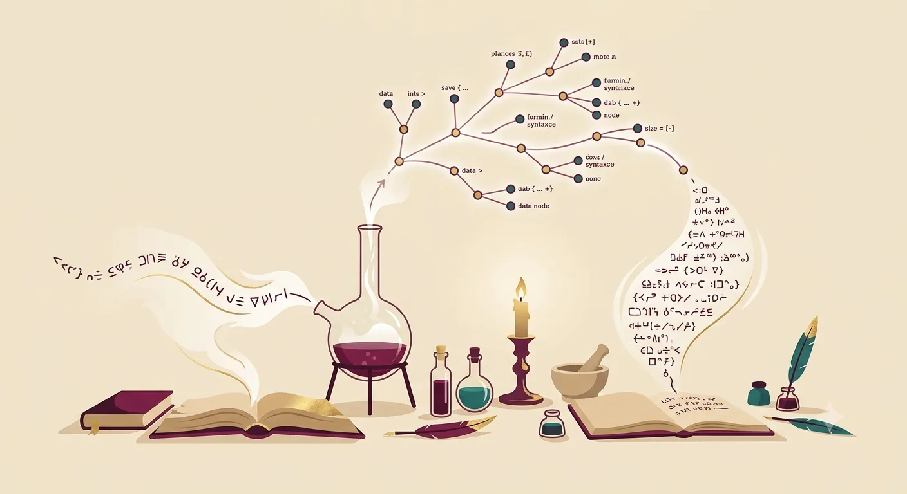
Elixir Meta Programming
in the voice of The Clear MentorCode as data, from quote/unquote to macros, hygiene, the use pattern, and compile-time code generation — then why a self-describing language fits the LLM-agentic era (tool catalogs, structured outputs, Igniter AST-patching), and when not to reach for a macro.
Claude Tools
in the voice of The Clear MentorA field guide to every built-in Claude Code tool — grouped by family, each with its permission default and the gotchas that bite.
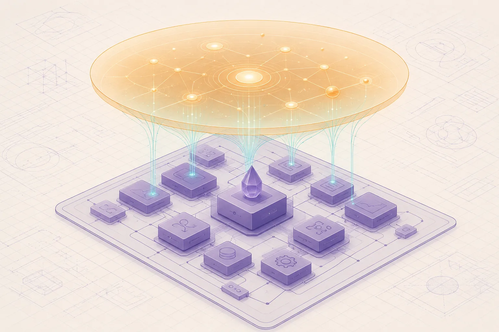
Ash Intelligent
A PRD for 'AshIntelligence' — a declarative intelligence layer for the Elixir Ash Framework — consolidated into a 12-chapter field guide and grounded in today's real Ash AI ecosystem (ash_ai, ash_oban, ash_state_machine, Spark, ReqLLM/LangChain). The pasted PRD was split by the app into 377 line-fragments; these were merged into coherent chapters that cover the vision, architecture, the Spark DSL, how you'd actually build it, and — the requested focus — the exciting use cases.
Ash Devices
in the voice of Richard FeynmanAn engineering manifesto turned field guide: model, simulate, and operate cyber-physical systems as declarative Ash resources — where hardware is just an adapter and the simulator is the default runtime.
Understand Software Memory Management
in the voice of Richard FeynmanA first-principles field guide to how a running program borrows, uses, and reclaims memory — stack vs heap, the four manual-memory bugs, how garbage collection really works, and how Rust, Zig, Java, Python, and Go each answer the one question: who frees the heap?
Golang for Vibe
in the voice of Richard FeynmanA first-principles tour of Go in Feynman's voice, built for vibe coders: why Go's plainness makes AI-written code easy to verify, the five-minute mental model, goroutines & channels, errors as values, structs & implicit interfaces, a dependency-free JSON web API, the agent workflow with Go's built-in graders, and shipping one static binary. Verified against Go 1.26.
ESP32-S3 Programming
in the voice of Richard FeynmanA first-principles field guide to the ESP32-S3: what the silicon is, what to build with it, how to write its firmware in Rust, and how to wire a fleet of devices to an Elixir/Phoenix backend over MQTT.
Algorithms for Modern developers
A practical, use-case-driven tour of the dozen algorithmic ideas that run real software — Big-O, binary search, hashing, sorting, two pointers/sliding window, graph traversal, Dijkstra, dynamic programming, greedy/intervals, heaps & top-K, and probabilistic structures — each paired with the real scenarios where you'd reach for it.
Rust: Fearless Systems Programming
in the voice of Richard FeynmanA first-principles tour of Rust in Feynman's voice: ownership and moves, borrowing, the memory/traits/lifetimes engine room, enums & pattern matching, error handling, generics/iterators/closures, fearless concurrency, and Cargo. Verified against stable Rust 1.96 / 2024 edition.
No books match that search.